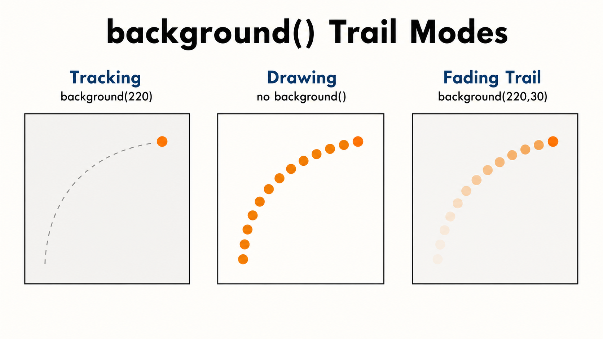
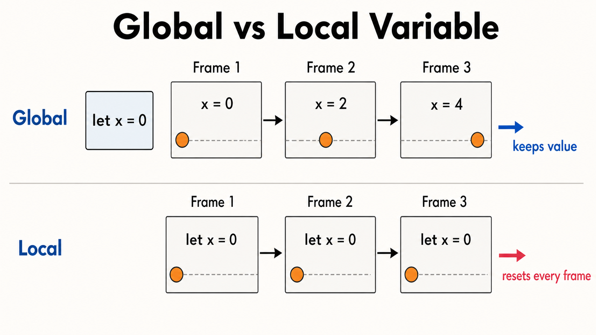

2주차 2교시 — 시스템 변수와 인터랙션 첫걸음
강의 아웃라인: week-02-outline 이전 교시: week-02-period1-student (좌표계와 변수의 이해) 다음 교시: week-02-period3-student (학생 주도 실습)
| 항목 | 내용 |
|---|---|
| 대상 | P5.js 입문자 (테크아트 전공) |
| 소요 시간 | 45분 |
| 이전 작업 | 1교시에서 만든 얼굴 변수 코드 (faceX /
faceY) |
-
mouseX·mouseY시스템 변수로 마우스에 반응하는 스케치를 만들 수 있습니다 -
background()유무·alpha로 추적·드로잉·잔상 효과를 구분할 수 있습니다 -
width·height로 반응형 배치를 하고, 변수 선언 위치로 움직임을 만들 수 있습니다
1교시 복습
1교시에서 두 가지를 배웠습니다.
- 좌표계: P5.js에서
(0, 0)은 캔버스 왼쪽 위에 있고, y값이 커질수록 아래로 내려갑니다. - 변수:
let size = 80;처럼 변수를 쓰면, 한 곳만 바꿔도 그 변수를 쓴 모든 곳이 같이 바뀝니다. 1교시 마지막에 얼굴 코드를 변수로 바꿔,faceX하나만 수정해도 얼굴 전체가 이동했습니다.
1교시에서는 변수에 200이라는 고정된
숫자를 넣어서 얼굴이 한 자리에 멈춰 있었습니다. 2교시에서는
실시간으로 변하는 값을 다룹니다. 그 결과 도형이
움직이거나, 마우스에 반응하게
됩니다.
심화 개념 1 — mouseX, mouseY: 마우스 위치 변수
지금까지는 변수에 200처럼 고정된
숫자를 넣었습니다. 이제는 마우스가 움직일 때마다 계속 바뀌는 값을 변수처럼
읽어와 도형을 움직입니다.
한 줄 정의
mouseX와 mouseY는 P5.js가 매 프레임 자동으로
업데이트해주는 마우스 위치 값입니다.
참조: 시스템 변수란?
P5.js에는 우리가 let으로 만들지 않아도 처음부터 존재하는
변수들이 있습니다. 이것을 시스템 변수라고 부릅니다. 직접
값을 넣지 않아도 P5.js가 알아서 업데이트합니다.
| 시스템 변수 | 담고 있는 값 |
|---|---|
mouseX |
마우스의 현재 x좌표 |
mouseY |
마우스의 현재 y좌표 |
draw()가 1초에 60번 반복되면서, 매 반복마다 P5.js가 현재
마우스 위치를 확인해 mouseX, mouseY에
넣어줍니다. 우리는 가져다 쓰기만 하면 됩니다.
확인: 마우스를 따라다니는 원
실행해서 확인할 코드
function setup() {
createCanvas(400, 400);
}
function draw() {
background(220);
ellipse(mouseX, mouseY, 50, 50); // 마우스 위치에 원 그리기
}실행하면 마우스를 움직일 때 원이 따라옵니다.
mouseX에는 마우스의 x좌표가, mouseY에는 y좌표가
실시간으로 들어갑니다.
매 프레임마다 ‘배경 지우기 → 마우스 위치에 원 그리기’를 1초에 60번 반복하기 때문에, 원이 부드럽게 따라오는 것처럼 보입니다.
적용: 1교시 얼굴 코드에 연결하기
1교시에서 만든 변수 버전 얼굴 코드에서 faceX = 200을
faceX = mouseX로 바꾸면 어떻게 될까요?
개념을 얼굴 코드에 연결하기
let faceX = 200;
let faceY = 200;
function setup() {
createCanvas(400, 400);
}
function draw() {
background(255, 220, 180);
faceX = mouseX; // 마우스 x좌표를 얼굴 x좌표에 넣기
faceY = mouseY; // 마우스 y좌표를 얼굴 y좌표에 넣기
// 얼굴
fill(255, 230, 200);
ellipse(faceX, faceY, 180, 200);
// 왼쪽 눈
fill(255);
ellipse(faceX - 40, faceY - 20, 40, 40);
fill(0);
ellipse(faceX - 40, faceY - 20, 20, 20);
// 오른쪽 눈
fill(255);
ellipse(faceX + 40, faceY - 20, 40, 40);
fill(0);
ellipse(faceX + 40, faceY - 20, 20, 20);
// 코
fill(255, 200, 170);
ellipse(faceX, faceY + 10, 15, 20);
// 입
fill(200, 100, 100);
ellipse(faceX, faceY + 45, 40, 15);
}실행하면 얼굴이 마우스를 따라다닙니다. 1교시에서 변수로 리팩토링해 둔 덕분에 두 줄만 추가하면 됩니다. 변수 없이 숫자를 하드코딩했다면 훨씬 힘들었을 것입니다.
기억할 것: mouseX와 mouseY는
내가 새로 만드는 변수가 아니라, P5.js가 매 프레임 갱신해주는 값을 가져다
쓰는 것입니다.
확인 질문: faceX = mouseX;에서
let을 안 쓰는 이유는 faceX를 이미 만들었고,
여기서는 값만 바꾸기 때문입니다.
심화 개념 2 — console.log(): 디버깅 첫걸음
코드를 짜다 보면 ‘왜 안 되지?’ 하는 순간이 옵니다. 그때 쓰는 것이
console.log()입니다.
console.log()란?
변수 안에 무엇이 들어있는지 콘솔 창에 출력해주는 함수입니다.
function setup() {
createCanvas(400, 400);
}
function draw() {
background(220);
console.log("x:", mouseX, "y:", mouseY); // 콘솔에 마우스 좌표 출력
ellipse(mouseX, mouseY, 50, 50);
}실행하고 아래 콘솔 패널을 보면, 마우스를 움직일 때마다 숫자가 바뀝니다.
x: 142 y: 203
x: 145 y: 198
x: 150 y: 195
...마우스를 왼쪽으로 옮기면 x 숫자가 줄어들고, 아래로 내리면 y 숫자가 커집니다. 이렇게 변수 값을 눈으로 확인하는 것이 디버깅의 기본입니다.
코드가 이상하게 동작하면, 의심되는 변수에
console.log()를 찍어 값을 확인하세요. 콘솔 패널이 접혀
있으면 에디터 아래쪽 Console 탭을 클릭해 펼칩니다.
심화 개념 3 — background() 유무에 따른 차이
마우스를 따라다니는 원 코드에서 background(220);이 매
프레임 배경을 지워주고 있었습니다. 이것을 빼면 어떻게 될까요?

비교 1: background() 있음 — 추적 모드
function setup() {
createCanvas(400, 400);
}
function draw() {
background(220); // 매 프레임 지우고 다시 그림
ellipse(mouseX, mouseY, 50, 50);
}매 프레임 배경을 새로 칠하므로, 이전에 그린 원은 사라지고 새 위치에만 원이 보입니다. 원이 마우스를 깔끔하게 따라다닙니다.
비교 2: background() 없음 — 드로잉 모드
function setup() {
createCanvas(400, 400);
background(220); // setup()에서 한 번만 배경 칠하기
}
function draw() {
// background() 없음! 이전 그림이 지워지지 않음
ellipse(mouseX, mouseY, 50, 50);
}background()를 setup()으로 옮기면 한 번만
실행되므로, draw()에서 그린 원들이 지워지지 않고 쌓입니다.
마우스를 움직이면 궤적이 남는 드로잉 도구가 됩니다.
지우는 것과 안 지우는 것, 코드 한 줄 차이로 완전히 다른 결과가
나옵니다.
비교 3: background() 투명도(alpha) — 잔상 모드
완전히 지우는 것(배경 있음)과 전혀 안 지우는 것(배경 없음)의 중간도 가능합니다.
function setup() {
createCanvas(400, 400);
}
function draw() {
background(220, 30); // 두 번째 숫자 = 투명도 (0~255)
ellipse(mouseX, mouseY, 50, 50);
}background(220, 30)에서 두 번째 숫자 30이
투명도입니다. 배경을 살짝만 칠하므로 이전 프레임이
완전히 가려지지 않고 서서히 사라집니다. 잔상이 남는
효과입니다.
background() 설정 |
효과 |
|---|---|
background(220) |
매 프레임 완전히 지움 → 깔끔한 추적 |
background(220, 30) |
살짝만 덮음 → 잔상 효과 |
background(220, 100) |
좀 더 빨리 사라짐 |
background() 없음 |
전혀 안 지움 → 드로잉 효과 |
alpha 값이 작을수록 잔상이 오래 남고, 클수록 빨리 사라집니다. 255를 넣으면 완전히 지우는 것과 같습니다. (색상의 투명도 개념은 3주차에서 자세히 다룹니다.)
잔상 효과를 만들려면 background() 두 번째 숫자를 크게
해야 할까요, 작게 해야 할까요?
답: 작게 해야 합니다. 작을수록 배경이 살짝만 덮이니까 이전 그림이 오래 남습니다.
심화 개념 4 — width, height: 캔버스 크기 변수
시스템 변수를 두 개 더 배웁니다.
| 시스템 변수 | 담고 있는 값 |
|---|---|
width |
캔버스의 가로 크기 |
height |
캔버스의 세로 크기 |
createCanvas(400, 400)을 하면 width에 400,
height에 400이 자동으로 들어갑니다.
왜 필요할까? — 캔버스 중앙에 원 그리기
캔버스 정중앙에 원을 그릴 때 ellipse(200, 200, ...)처럼
직접 숫자를 넣었습니다. 그런데 캔버스를
createCanvas(600, 400)으로 바꾸면 200은 더 이상 중앙이
아닙니다.
function setup() {
createCanvas(400, 400);
}
function draw() {
background(220);
// 숫자 하드코딩 — 캔버스 크기 바뀌면 중앙이 안 맞음
ellipse(200, 200, 80, 80);
}이것을 width와 height로 바꿉니다.
function setup() {
createCanvas(400, 400);
}
function draw() {
background(220);
// 캔버스 크기에 맞춰 항상 중앙!
ellipse(width / 2, height / 2, 80, 80);
}width / 2는 가로의 절반, height / 2는
세로의 절반 — 항상 정중앙입니다. 이제
createCanvas(600, 400)으로 바꿔도 원은 여전히 중앙에
있습니다.
캔버스 크기가 바뀌어도 코드를 수정할 필요가 없는 구조를 반응형 레이아웃이라고 합니다. 프로젝트가 복잡해질수록 이 습관이 중요해집니다.
활용 예시: 캔버스를 4등분하는 선
function setup() {
createCanvas(400, 400);
}
function draw() {
background(220);
// 가로 중앙선
line(0, height / 2, width, height / 2);
// 세로 중앙선
line(width / 2, 0, width / 2, height);
}가로선은 y좌표를 height / 2로, 세로선은 x좌표를
width / 2로 잡았습니다. createCanvas를 어떤
숫자로 바꿔도 정확히 4등분됩니다.
캔버스 오른쪽 아래 모서리의 좌표를 숫자 없이 쓰려면?
답: (width, height)입니다.
심화 개념 5 — 변수로 움직임 만들기
지금까지 변수에 넣은 값은 두 종류였습니다 — 고정된
숫자(let faceX = 200), 그리고 시스템
변수(faceX = mouseX). 이번에는 직접 값을
바꾸는 방법을 배웁니다.
매 프레임 변수 값 변경하기
let x = 0; // 공의 시작 위치
function setup() {
createCanvas(400, 400);
}
function draw() {
background(220);
ellipse(x, 200, 50, 50); // x 위치에 원 그리기
x = x + 2; // 매 프레임 x를 2씩 증가
}실행하면 원이 왼쪽에서 오른쪽으로 이동합니다.
draw()가 반복될 때마다 x가 2씩 커지므로, 원의
x좌표가 0 → 2 → 4 → 6…으로 계속 증가합니다.
x = x + 2는 수학의 등식으로 보면 어색하지만,
프로그래밍에서는 ’현재 x값에 2를 더한 결과를 다시 x에
넣어라’라는 뜻입니다. 상자 안의 숫자를 꺼내서, 2를 더하고, 다시
상자에 넣는 것입니다.
프레임 1: x = 0 → 원 위치: 0 → x = 0 + 2 = 2
프레임 2: x = 2 → 원 위치: 2 → x = 2 + 2 = 4
프레임 3: x = 4 → 원 위치: 4 → x = 4 + 2 = 6
프레임 4: x = 6 → 원 위치: 6 → x = 6 + 2 = 8
...숫자 2를 5로 바꾸면 더 빨리,
0.5로 바꾸면 느리게 움직입니다. 이 숫자가
속도입니다.
변수 선언 위치의 중요성 — 전역 vs 지역
1교시에서 ’변수는 코드 맨 위에 쓴다’고 했습니다. 그 이유를 봅니다.
let x = 0;을 draw() 안에
넣으면 어떻게 될까요?

function setup() {
createCanvas(400, 400);
}
function draw() {
background(220);
let x = 0; // draw() 안에서 매번 새로 만듦
ellipse(x, 200, 50, 50);
x = x + 2;
}실행하면 원이 움직이지 않습니다.
draw()가 반복될 때마다 let x = 0;이 실행되어
x가 매번 0으로 돌아가기 때문입니다.
프레임 1: let x = 0 (새로 만듦) → 원 위치: 0 → x = 2 → 프레임 끝
프레임 2: let x = 0 (또 새로 만듦!) → 원 위치: 0 → x = 2 → 프레임 끝
프레임 3: let x = 0 (또 새로 만듦!) → 원 위치: 0 → x = 2 → 프레임 끝올바른 방법: draw() 바깥에 선언
let x = 0; // draw() 바깥 = 한 번만 만들어지고, 값이 유지됨
function setup() {
createCanvas(400, 400);
}
function draw() {
background(220);
ellipse(x, 200, 50, 50);
x = x + 2; // 매 프레임 값이 누적됨
}| 위치 | 동작 | 결과 |
|---|---|---|
draw() 바깥 (전역) |
한 번 만들어지고 값 유지 | 원이 이동함 |
draw() 안 (지역) |
매 프레임 새로 만들어짐 | 원이 제자리 |
draw() 바깥에 쓰면 프로그램 시작 시 한
번만 만들어지고 값이 계속 유지됩니다. 1교시에서
let faceX = 200;을 맨 위에 쓴 이유가 이것입니다.
draw() 안에 넣으면 매 프레임 200으로 돌아가서 마우스를
따라갈 수 없습니다.
실전 사례
지금까지 배운 것들을 조합하면 다양한 표현을 만들 수 있습니다. 세 가지 사례를 봅니다.
사례 1: 마우스를 따라보는 눈
얼굴 전체가 아니라 눈동자만 마우스를 따라가게 만듭니다.
let faceX = 200;
let faceY = 200;
function setup() {
createCanvas(400, 400);
}
function draw() {
background(255, 220, 180);
// 얼굴 (고정)
fill(255, 230, 200);
ellipse(faceX, faceY, 180, 200);
// 왼쪽 눈 — 흰자는 고정, 눈동자는 마우스 방향으로 살짝 이동
fill(255);
ellipse(faceX - 40, faceY - 20, 40, 40);
fill(0);
ellipse( // 눈 중심 + 마우스 방향 오프셋
faceX - 40 + (mouseX - faceX) / 15,
faceY - 20 + (mouseY - faceY) / 15,
20, 20
);
// 오른쪽 눈 — 흰자는 고정, 눈동자는 마우스 방향으로 살짝 이동
fill(255);
ellipse(faceX + 40, faceY - 20, 40, 40);
fill(0);
ellipse( // 눈 중심 + 마우스 방향 오프셋
faceX + 40 + (mouseX - faceX) / 15,
faceY - 20 + (mouseY - faceY) / 15,
20, 20
);
// 코
fill(255, 200, 170);
ellipse(faceX, faceY + 10, 15, 20);
// 입
fill(200, 100, 100);
ellipse(faceX, faceY + 45, 40, 15);
}핵심은 (mouseX - faceX) / 15 부분입니다. ’마우스가 얼굴
중심에서 얼마나 떨어져 있는지’를 구한 다음, 15로 나눠서 아주
조금만 움직이게 합니다. 그래서 눈동자가 눈의 흰 부분 안에서
자연스럽게 움직입니다. /15를 /5로 바꾸면 더
크게, /30으로 바꾸면 더 미세하게 움직입니다.
사례 2: 화면을 가로지르는 공
let ballX = 0;
function setup() {
createCanvas(400, 400);
}
function draw() {
background(220);
fill(255, 100, 100);
noStroke();
ellipse(ballX, height / 2, 40, 40);
ballX = ballX + 3; // 오른쪽으로 이동
}빨간 공이 왼쪽에서 오른쪽으로 이동합니다. 화면 밖으로 나가면 보이지
않게 될 뿐, 에러는 나지 않습니다. 조건문을 배우면 벽에 부딪혀 튕기는
것도 만들 수 있습니다. height / 2를 썼으므로
createCanvas를 바꿔도 공은 항상 세로 중앙에서
움직입니다.
사례 3: 잔상 드로잉 도구
function setup() {
createCanvas(400, 400);
background(30); // 어두운 배경
}
function draw() {
// background() 없음 → 이전 그림 유지
noStroke();
fill(255, 200, 100);
ellipse(mouseX, mouseY, 20, 20);
}background()를 draw()에서 뺐으므로 원들이
사라지지 않고 쌓여 궤적이 남습니다. 간단한 드로잉 도구입니다. 여기에
잔상 효과를 더하면:
function setup() {
createCanvas(400, 400);
}
function draw() {
background(30, 20); // 잔상 효과 — 서서히 사라짐
noStroke();
fill(255, 200, 100);
ellipse(mouseX, mouseY, 20, 20);
}궤적이 서서히 사라져, 빛이 꼬리를 끄는 듯한 효과가 됩니다. 미디어아트에서 자주 쓰이는 표현입니다.
세 사례 정리
| 사례 | 핵심 기술 |
|---|---|
| 마우스를 따라보는 눈 | mouseX, mouseY → 도형 일부에만 적용 |
| 화면 가로지르는 공 | x = x + 3 → 변수 값 매 프레임 변경 |
| 잔상 드로잉 | background() 없음/alpha → 잔상 효과 |
이 세 가지를 조합하면 ‘마우스로 조종하는 캐릭터가 잔상을 남기며 이동하는’ 스케치도 만들 수 있습니다. 3교시에 직접 만들어봅니다.
3교시 실습 안내
실습 과제: 마우스를 따라다니는 나만의 캐릭터
1주차에 만든 얼굴(또는 새 캐릭터)을 변수로 리팩토링하고, 마우스에 반응하도록 업그레이드합니다.
최소 요구사항
- 하드코딩된 좌표가
faceX,faceY같은 변수로 교체 mouseX,mouseY를 활용해 마우스에 반응triangle()이나 새 도형 1개 이상 추가stroke()또는strokeWeight()로 테두리 스타일링
단계별 진행
| 단계 | 내용 | 예상 시간 |
|---|---|---|
| Step 1 | 1주차 얼굴 코드를 변수로 리팩토링 | 10분 |
| Step 2 | mouseX/mouseY로 마우스 따라다니기 |
10분 |
| Step 3 | 도형 추가 + 꾸미기 | 10분 |
| Step 4 (선택) | 잔상 효과 실험 | 남는 시간 |
어디서부터 시작할지 모르겠으면, 1교시 얼굴 변수 코드를 에디터에
복사하고 draw() 맨 앞에
faceX = mouseX; faceY = mouseY; 두 줄을 추가해보세요. Step
1과 2를 한 번에 해결하는 방법입니다. 잘 안 되면
console.log(faceX, faceY);로 값을 확인하세요.
정리
mouseX,mouseY는 P5.js가 자동으로 업데이트하는 시스템 변수 — 마우스 위치를 실시간으로 알 수 있다background()를 빼거나 alpha를 주면 잔상 효과 — 미디어아트의 핵심 표현 기법- 변수를
draw()바깥에 선언해야 매 프레임 값이 유지되어 움직임을 만들 수 있다
3교시 안내
3교시에는 지금까지 배운 모든 것을 써서 나만의 인터랙티브 캐릭터를 만듭니다. 단계별 가이드를 따라 진행합니다.